Bayes Theorem/Network (Probability Relations)#
Bayes theorem relates events with the events that have already occurred. This relation falls under stochastic (probability) model relations as opposed to its counterpart of deterministic models (100% certainty of events). Although the formula is quite simple as shown below, its expansion can be quite cumbersome still:
where,
\(P(A|B)\) is the probability of event
Aoccurring given the observation thatBhappened. (ex: P(clean|showered) what is the probability that i am clean given that i showered). This is also referred to as theposterior probability\(P(B|A)\) follows the same logic, this is the probability of event
Boccurring given the observation thatAhappened. This is also referred to as thelikelihoodofA\(P(A)\) and \(P(B)\) are probabilities of observation that
Awill occur andBwill occur respectfully
Bayes Network (Bayes Net)#
Bayes Theory is great, but what do we apply this equation to? It just so happens that events can be graphically represented to show their relations. Drawing out a Bayes Net has multiple advantages; first it helps us collect the complexity of all the variables and their inter-connections For example, does taking a show have anything to do with me being clean, yes so these events are connected, however the birds chirping outside has nothing to do with me being clean. In addition, the directions in which events are connected also gives us insight into their dependencies. For example, me being clean is dependent on weather or not i showered therefore, the event of being clean and the event of shower are dependent events. Let’s examine this further in the diagram below:
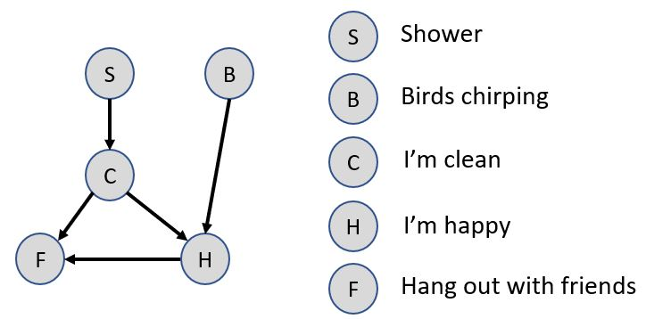
The above diagram shows our interpretation for the given events a particular day of the week:
showered that day (let’s hope this is near 100%!)
birds chirping that day
observation that I am clean
observation that I am happy
likely hood that I will hang out with friends
Notice that taking a shower has a direct affect on us observing that I am all cleaned up that day, so we draw an line between shower-clean with direction flowing from shower -> clean since showering causes us to be clean. Ultimately the event that I will hang out with friends depends on me being clean (i am more likely to be around people if i am clean so if i am clean then the probability of hanging with friends will also be higher) and me being happy. Note that the birds chirping doesn’t directly effect me hanging out with friends but it does influence my happiness therefore it also ultimately affect me hanging out with friends or not.
Now this is a silly example, but we can see that data that we collected also has to correlate to our Bayes Net model. For example, collecting daily data of the probability that i showered, and that the birds chirped is good, however our collection of being clean, happy, and hanging out with friends must be collected in conjunction with its dependent inputs. That means that when we collect data for happiness, we not only have to record the ultimate results of happy/sad for that day but also the joint probability event that I was happy for a day when i was clean and birds were chirping. We collect this data over a appropriate amount of time and create statistical probabilities from it, for example:
10 days happy when i was clean, and birds were chirping,
5 days happy when i was clean but birds were not chirping,
3 days happy when i was not clean and birds were chirping and,
2 days happy when i was not clean and birds were not chirping
We can now write this in a table format of joint probabilities, this is called a joint probability:
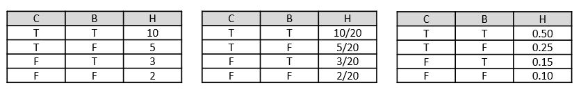
Note that we do not need to collect additional data about non-directly lined event (ex: event of happy and shower) since these probabilities can be calculated with Bayes Theory.
Before diving into example problems it is important to understand dependent and independent relations.
Bayes Net Dependency#
Drawing out a Bayes Net is not only useful for visualizing a network of events, it is also useful for understanding relational dependencies of events. Now, why should we care about event dependency? Well, it can drastically simplify our computation if 2 events are independent of each other. So how do we go about determining event dependency of events for complex networks? It turns out that there is a simple rule called the determination of triplets, and it is best illustrated with the figure below:
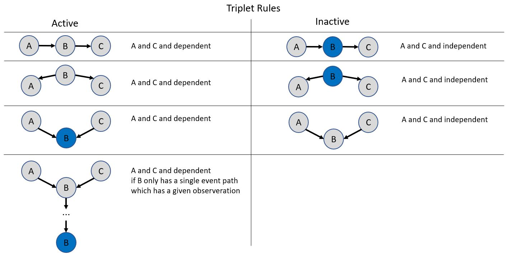
Let’s put these triplet to the test on a real problem:
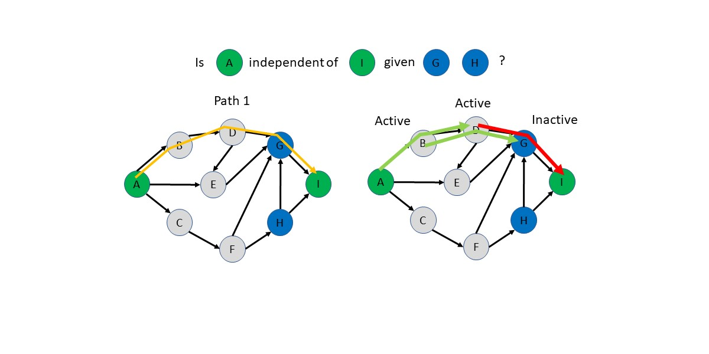 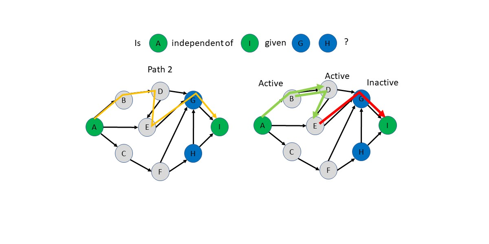 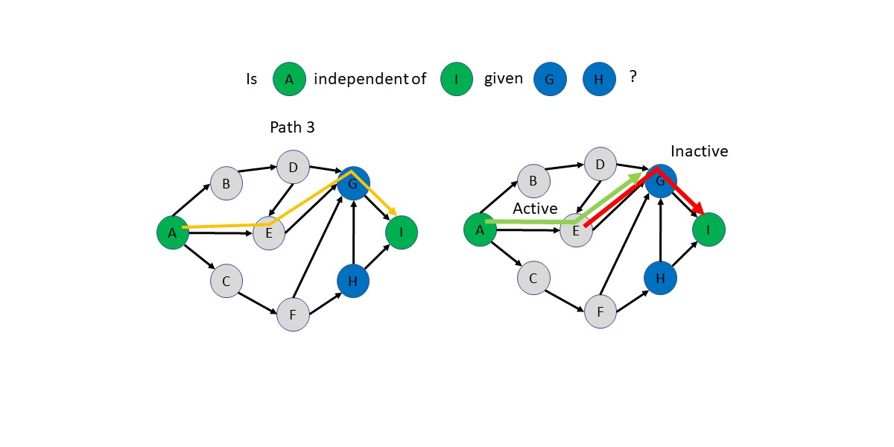 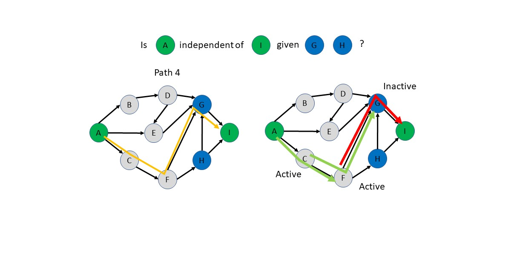 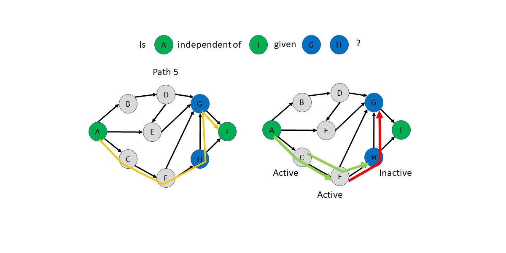 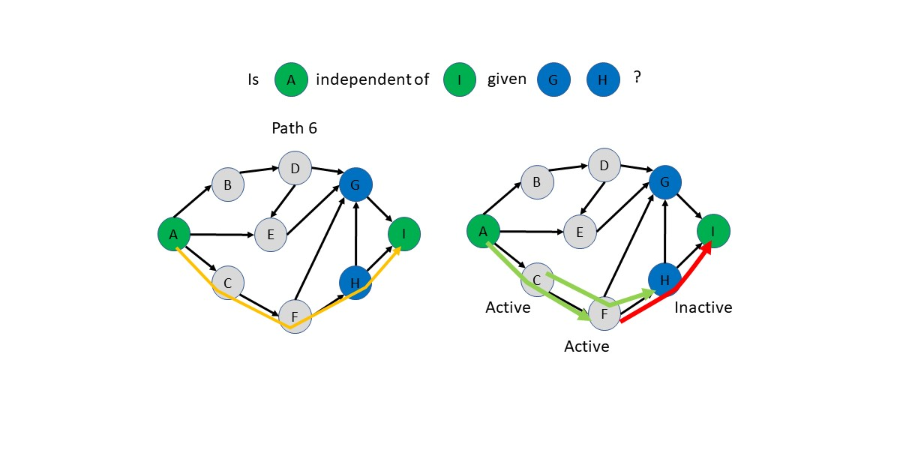
Bayes Joint Probability Example#
Given the following Bayes Net, what is the probability of F given that we know A and B are True \(p(F|A,B)\)?
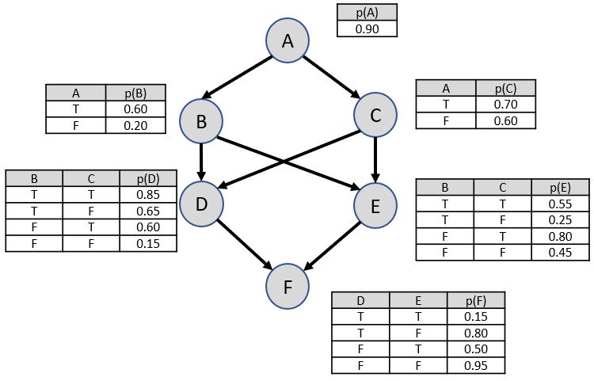
Step1: expand the terms for what we are looking for “F”
First, note that the expansion of \(p(F)\) has 4 terms 2 for each boolean inputs (D, and E event nodes). If this was not a boolean problem, we would simply just have more variations in the summation (ex: T,F, and TIE, would be 2nodes*3options=6).
Second, we “expand” by multiplying the \(p(F|D,E)\) by the probability of “D” and “E” occurring given “A” and “B” for the first term, and so on for the other summed terms.
Third, note that the expanded \(p(F)\) can now be substituted with actual values from the Bayes Net joint probability tables.
Step2: simplify known terms of \(p(F)\)
Step3: repeat expansion
Note that for combined probabilities (“D” and “E” true at the same time) the expansion of its inputs is only done 1x! This is a good example for this because both \(p(D|B,C)\) and \(p(E|B,C)\) both have the same dependencies however we only expanded it once, as shown in the above equation.
Since we don’t know “C” we get 2 terms here for the 2 variations of “C” for this boolean example.
Step4: simplify known terms
Note that \(p(-C|A) = 1-p(C|A) = 0.30\)
Step5: sub-input main equations and repeat for the rest of the terms
Note that the whole problem could be solved brute force as well in a table:
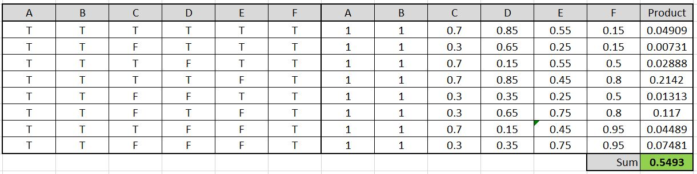
References#
Stuart J. Russell and Peter Norvig, Artifical Intelligence A Modern Approach 3rd ed. Upper Saddle River, New Jersey: Pearson Education, 2010.